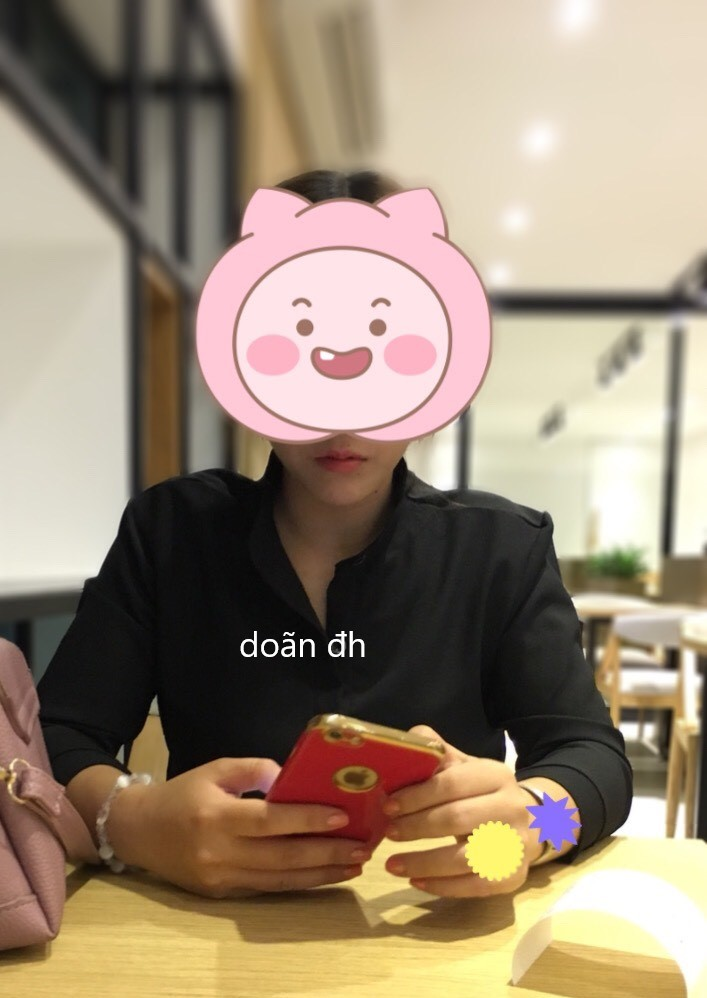

PHẦN 2: THẢO VY BỊ HIẾP
Suy nghĩ Thảo Vy vừa bị đụ bởi người đàn ông khác khiến mặt tôi nóng bừng, nhìn chằm chằm vào cơ thể trần truồng trước mặt, thân hình hoàn mỹ này, đôi môi xinh xắn này, cặp vú trắng ngần này, cái lồn căng mọng này vốn thuộc về mình tôi nay bị người đàn ông khác đè xuống dập tan nát khiến tôi vừa ghen tức vừa nứng tuột độ.
Tôi cởi phăng cái quần để giải phóng cho con cu đã cứng ngắc từ bao giờ, banh 2 chân nàng ra và cắm thẳng cặc vào lồn nàng, cặc tôi dễ dàng đâm vào vì lồn Thảo Vy đã nhoe nhoét nước từ bao giờ, có lẽ là nước lồn nàng cùng tinh trùng của người đàn ông khác hòa quyện vào nhau khiến lồn nàng chảy nước trắng xóa trào ra theo mỗi cú nhấp, chưa được 5 phút thì tôi đã hứng tột đỉnh và bắn hết tinh trùng vào lồn nàng.
Cơn sướng qua đi, tôi nằm vật ra và suy nghĩ về những gì đã xảy ra tối nay, cảm thấy nếu Thảo Vy có ngoại tình thật thì sẽ như thế nào? Tôi còn yêu Thảo Vy nhiều lắm và thực sự không muốn mất em. Ngắm nhìn gương mặt nàng vẫn đang bất tỉnh say giấc, gương mặt thiên thần mà tôi thương yêu bao lâu nay, tôi dần dần chìm vào giấc ngủ.
Sáng hôm sau, tôi được đánh thức bởi 1 nụ hôn của nàng, rồi Thảo Vy rúc vòng lòng tôi
– Hôm qua không biết sao em say quá luôn, uống ít hơn bình thường mà sao giờ đau đầu ghê luôn á.
– Hèn chi em về trễ thế, mà em đi taxi về à? Tôi cố tỏ ra bình tình hỏi nàng
– Đâu, anh gọi xong khoảng chút sau là cũng về mà, em định đi taxi mà Nguyên đòi chở em về á
– Ủa, chứ lúc đi em đi với ai
– Lúc đi em đi với Hoàng (bạn thân của nàng), nhưng Hoàng có việc nên về trước. Anh gọi xong là em uống ly rượu Nguyên mời rồi Nguyên nói để Nguyên chở về, tiện bàn chút việc liên quan đến dự án bên em đang theo. Lúc đó cũng tính tiền rồi á. Mà sao lúc lên xe em chóng mặt ghê á anh, chắc do em uống không quen loại rượu đó, lên xe mới thấm làm em mê man, giờ em vẫn còn thấy lâng lâng với đau đầu lắm luôn nè
Tôi ngẩn người ra suy nghĩ, lúc gọi nàng là 11h, từ chỗ nàng hát về nhà cũng tầm 20p, vậy hơn1 tiếng đó có chuyện gì đã xảy ra? Có phải nàng đã bị chuốc thuốc rồi bị hiếp hay không?
– À, mà bọn em uống bia hay rượu?
– Thì lúc đầu uống bia ôm chai hết, sau Nguyên nó có lấy thêm chai rượu, em có uống thêm mấy ly rượu Nguyên đưa thôi
Đến lúc này thì tôi có thể khẳng định đến 90% là Thảo Vy bị thằng Nguyên nó chuốc thuốc rồi.
– Mà đêm qua a làm gì em đúng không, vú em bầm hết rồi đây này? Người gì đâu chơi không biết giữ gì hết, hỏng hết hàng họ em rồi
– À à, anh xin lỗi, chắc tại anh nứng quá
– Hi hi, mà tối qua e mệt quá, không mở mắt ra nồi luôn á. Để em bù lại cho nha
Nói rồi nàng chồm lên đè tôi xuống, cúi xuống cầm lấy con cu và bắt đầu bú nút, con cặc tôi cương cứng lên 1 cách nhanh chóng, khác hẳn mọi ngày. Nàng bú nút nó say sưa, vừa bú vừa ngẩng đầu nhìn tôi 1 cách dâm đãng.
Rồi nàng nhổm người lên, tay cầm con cặc cứng ngắc của tôi nhét vào lồn nàng, nàng nhún nhảy liên tục trên bụng tôi
– ư ư…a.. chồng ơi, em sướng quá
Suy nghĩ đêm qua nàng vừa bị thằng tôi ghét nhất đè xuống đụ, tưởng tượng ra cảnh nó banh lồn nàng, đè cái thân hình mập lùn đó xuống người nàng mà đụ khiến tôi vừa tức vừa nứng 1 cách lạ kì.
Tôi chồm người lên và bắt đầu doggy nàng, tôi kéo 2 tay nàng ra sau và bắt đầu đóng điên cuồng vào lồn nàng khiến nàng rên la thất thanh
Aaaaa…chồng ơi, em sướng quá, em chết mất, ư ư..aaa…
Lật người nàng lại, tôi gác 2 chân nàng lên vai rồi ra sức dập mạnh vào lồn nàng, 2 tay vò nát cặp vú nàng, gương mặt nàng dại đi vì sướng. Ngắm nhìn gương mặt như thiên thần của nàng, nghĩ đến cảnh nàng vừa bị đụ bởi thằng Nguyên làm tôi nứng không kiểm soát
– Hự, anh sướng quá em ơi, anh ra …
tôi đóng thật mạnh thêm vài cái rồi xuất tinh xối xả trong lồn nàng. Nằm vật ra cạnh nàng vì mệt, nàng ngoài người ra lấy khăn giấy lau đống tinh trùng trong lồn và lau mồ hôi cho tôi, nàng cười một cách mãn nguyện, lâu lắm rồi tôi mới được thấy nàng sướng đến thế.
– Hic, anh chơi thế còn gì là hàng họ của em nữa
– Cho anh xin lỗi, nhưng anh sướng quá. Em có thích không?
– Có, sướng lắm chồng iu ơi, mà sao nay anh hưng phấn quá vậy, anh đụ em mạnh lắm luôn á, em tê hết cả người rồi nè
– Hi, anh cũng không biết nữa (chẳng lẽ tôi trả lời nàng là do tôi tưởng tưởng nàng bị hiếp khiến tôi thấy nứng)
– Thôi dậy đi nè, anh hứa hôm nay chở em đi shopping, đi coi phim, không được nuốt lời đâu đó. Nói rồi nàng đi về nhà tắm, bắt đầu tắm và thay đồ
Tôi nằm suy nghĩ về chuyện đã qua, chắc không nên nói với Thảo Vy về điều tôi đang nghĩ, dù sao chúng tôi cũng sắp cưới rồi, cứ coi như là 1 tai nạn mình tôi biết thôi. Tôi thực sự không muốn đánh mất Thảo Vy, không muốn tước đi nụ cười trên gương mặt thiên thần đó.
Trưa hôm đó, tôi chở nàng đi ăn rồi đi xem phim, Thảo Vy có 1 sở thích kì lạ là rất thích coi các thể loại phim ma, phim kinh dị mặc dù nàng rất sợ.

Đôi môi xinh xắn dâm đãng với sở thích bú cu và nuốt tinh trùng
Dẫn Thảo Vy đi 1 vòng các shop ở Vincom Đồng Khởi để nàng mua sắm, tay tôi xách lỉnh kỉnh 1 đống đồ. Nàng quay qua thơm má tôi 1 cái, thì thầm vào tai tôi
– Ráng chiều vợ đi, chiều về em nấu món chồng thích cho chồng ăn nha
– Anh thích ăn em thôi
– A nói đó nha, tối nay cho anh ăn cả đêm
Nói rồi Thảo Vy dẫn tôi vô 1 shop quần áo, để tôi ngồi ở ghế chờ, nàng lựa vài bộ đồ rồi đi vô phòng thử đồ. Nhưng mãi một lúc lâu sau vẫn không thấy nàng đi ra, tôi đi đến gần phòng thay đồ xem thế nào thì nghe thấy nàng đang nói chuyện điện thoại với ai đó, tôi nghe loáng thoáng nàng chửi ai đó khốn nạn. Tôi cất nhẹ tiếng gọi
– Em ơi, có sao không, sao thử đồ lâu thế
– A, ANH ĐỢI EM CHÚT. Giọng nàng nghe có vẻ luống cuống và hốt hoảng
Một lúc sau nàng đi ra, gương mặt có vẻ mệt mỏi và hơi tái nhợt
– Em có sao không? Sao em có vẻ mệt mệt thế
– À, có chút việc ở công ty phát sinh, chắc anh chở em về nhà em thay đồ rồi em lên công ty xem thế nào.
– Okie, vậy mình về thôi em
Trên đường về nhà, nàng ngồi thừ ra như người mất hồn. Vừa về đến nhà, nàng vội vàng thay đồ, tôi nói để tôi chở nàng đi nhé. Nàng bảo:
– Anh ở nhà nghỉ đi, giờ em lên công ty rồi đi với sếp em.
Nói rồi nàng luống cuống rời khỏi nhà.